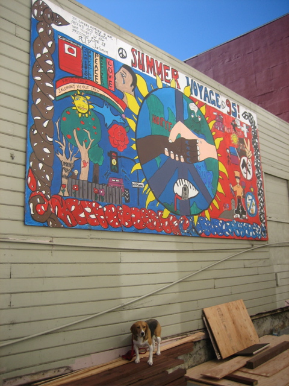

<--Previous
Up
Next-->

Summer Voyage 95!
On the north side of 26th Street just east of Mission. This mural was in a walled garden for years. Recently the area was opened up for renovation, which gave us the chance for this photo.